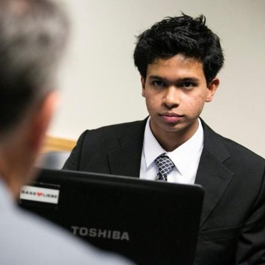

Zabir Islam
Zabir is a junior, academic technology fellow at Tufts majoring in Computer Science. He was an software engineer at Tufts' Human Robot interaction lab and helped debug, maintain, refactor and write new tools for Java-based software architecture for robots.